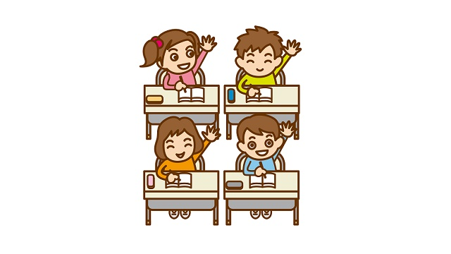

先日ある公立小学校を訪ね授業風景を見学してきました。
感想その１
私としては仕事の一環で訪問したわけですが個人的にとても印象深い一日となりました。まず第一に小学生たちが皆元気でエネルギーに満ちあふれた様子であること。
「子どもなのだから元気で当り前だろう」という意味ではなく、授業という一定の枠内にいながら自分らしさ―個性―を全開にしている姿に新鮮な感動を覚えたということです。
私は長く中高生を教えてきたので彼らの奔放なまでの個性発揮は、やはり改めてスゴイことだと思わずにはいられません。
特に1年生から4年生が個性丸出しの子が多く楽しかったし、高学年の子たちは少し大人びて発言も筋道立っているもののそれでもエネルギッシュで爽快でした。
小学生の子どもたちがあれほど生き生きしているのは単に個性を発揮しているからだけではありません。
勉強の話になりますが、小学生の素晴らしさは何といっても好奇心に満ちあふれていて教わる内容に対して純粋に知的欲求を働かせている点にあります。
先生がよほど抑圧的でない限り子どもたちは「知りたい気持ち」と「知っていることを発表したい欲求」を素直に表現してくれます。
私が見学した授業でも、先生の巧みな問いかけに子どもたちはほぼ全員が元気よく「ハイ」「ハイ」と挙手し次々と嬉しそうに答えていました。
その姿を見ていると、人間が本来もっている知的好奇心を小学生はまだ失っていず、その率直な発露が楽しいものだという健全な精神が息づいているのが分かります。
「鉄は熱いうちに打て」という言葉があるように、私は改めて小学生の段階で勉強に対する（勉強に限らないが）好奇心を伸ばし育てることの大切さを痛感したのです。
というのも「知的好奇心」は誰でももっているのに、大人いや中学生くらいになると急速にしぼんでしまうからで、しかもこの知的好奇心の大小がその後の人間としての器をも決めてしまうくらい重要な要素だからです。
これ（知的好奇心）こそが人が学ぶ領域を広げていくための源であり、一ヶ所に安住せず自己を高めていく上で欠かせない資質だからです。長期的な観点から言えば、テストの点数や順位などはこの（知的）好奇心の大切さに比べれば問題にならないほど小さなものに過ぎません。
なので小学生のうちは親も子どもの能力を、テストの点や順位で測る短絡をひかえて欲しいのです。他者と比較したり「国語の点は良いのに算数はダメじゃない」などと安易に判定を下さずもっと長い目で子どもを見守って欲しいと思うのです。
中学生になると急速に知的好奇心を失うのも、ある意味子どもたちをテストの点や偏差値で数値化、序列化することに原因があるといえるでしょう。
そもそも中学校では通常の授業やテキスト自体がテストを前提に構成されている以上、好奇心に沿って「知りたい内容」を積み上げていくことはできません。それより「試験に出そうな重要事項」を中心に覚える作業がメインなのです。
高校も覚える量が膨大になるだけで基本は同じ。
つまり中学校や高校の現行システムでは、知的好奇心の有無などより試験に出そうな内容の記憶量を競うことに力を注いできたわけで、結果として考える力そのものは身につかず試験が終われば覚えた知識自体もすぐに忘れてしまうのが本当のところです。
知的好奇心に基づかない「テストのための勉強」は長期的な力に結びつかない。
それが長く教育の現場に立ってきた私の偽らざる実感です。
感想その２
もう一つ、小学校を訪れて感じたことがあります。
それは子どもたちが自分の「ありのまま」を表現することを恐れていないという点です。
「答えられなかったらどうしよう」
「間違っていたらカッコ悪い」
「手を挙げて間違うくらいなら最初から黙っていたほうがいい」
中学生なら普通に見られるこのような「自己防衛」の意識が小学生にはまだ芽生えていないのです。
それを表すエピソードがありました。4年生のクラスで一人の男子生徒が当てられ、勢いよく立ったのに答えを度忘れしたらしく「アレ～アレ～」と口ごもるばかり。先生がうまく誘導して答えられたものの、次の質問にも自ら挙手したにも関わらずやはり答えられません。
ずっと目を泳がせて口ごもっています。さっきと同じように誘導されて何とか答えられましたが、先生の粘り強い誘導や周囲のクラスメイトたちの暖かい励ましの空気が、この男子生徒の「ありのまま」を失敗ではなくユーモラスな個性として浮き立たせていたのです（私はつい笑ってしまいましたが…）。
どのクラスもこんな調子で、子どもたちは皆答えが合っていようが合っていまいが元気よく自分を表現しているのです。そこには「恥をかくのは嫌だ」とか「変なこと言って皆に笑われたら…」という過剰な自意識はなく、ただ自分を素直に表現する喜びを感じているようでした。
私たちは誰でも自分を表現したい欲求があります。自分の個性、ユニークなところをありのままに表現したい根源的な願いがあるのです。
それを周囲が認めることで子どもは「自己肯定感」をもつことができます。自己肯定感をもった子どもは、他者と比較して落ち込んだり他者を見下すことで優越感を得たりする必要を感じないでしょう。なぜなら自分はかけがいのない存在だと感じることができるからです。
だから、小学生を教育する上で心がけるべきことは次の2点なのです。
子どもたちの本来もっている知的好奇心をうまく育てること。（その芽を摘まないようにすること）
子ども一人ひとりの個性―ありのままのユニークな特性―を認め伸ばすこと。（他と比較して矯正しないこと） それによって自己肯定感をもたせること。
小学生をお持ちの親御さんはぜひ心に留めてほしいと思います。
久しぶりに小学校を訪問し、子どもたちの生き生きした姿を見て私自身改めて教育の原点を考えさせられた一日でした。
※この日は他にも子どもたちの興味深いエピソード、特に知的障害児のクラスでの感動的なシーン、そして校長先生の学校運営に関する苦心談などを知ることができました。
ブログでこれらをお伝えしようと思いましたが、学校名が特定される恐れがあり、またプライバシー保護の観点からも差し控えるべきと感じました。
ご了承のほどをお願いします。